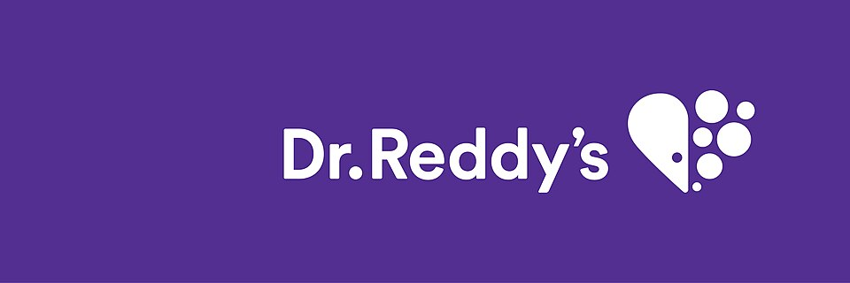

Dr. Reddy's Laboratories
Dr. Reddy's Laboratories는 인도 하이데라바드에 본사를 둔 다국적 제약회사이다. 1984년 Kallam Anji Reddy가 설립했으며 의약품과 의약품 원료를 제조·판매한다.
최종 업데이트

Dr. Reddy's Laboratories는 어떤 브랜드인가
이 회사는 인도 하이데라바드에 본사를 두고, 미국 본사는 뉴저지주 이스트브런즈윅에 있는 인도의 다국적 제약회사이다. 인도와 해외에서 다양한 의약품을 제조하고 판매한다.
190가지가 넘는 의약품과 60가지 원료의약품(API), 진단 키트, 중환자 치료 제품, 바이오기술 분야 제품을 생산한다. 처음에는 인도 제약사에 원료를 공급하는 업체로 출발했으나 규제가 덜한 시장으로 수출을 넓혔다.
1990년대 초에는 확대된 규모와 수익성을 바탕으로 미국과 유럽 같은 규제 시장의 승인을 받는 데 집중했다. 2007년에는 FDA 승인 공장 일곱 곳에서 원료의약품을 생산했다.
Dr. Reddy's Laboratories는 어떻게 시작되고 성장했나
1984년 Kallam Anji Reddy가 원료의약품을 생산하며 회사를 시작했다. Reddy는 이전에 Indian Drugs and Pharmaceuticals Limited에서 일했다.
1986년 브랜드 제제 사업을 시작했고, 1년 안에 인도에서 첫 인지 브랜드인 Norilet을 출시했다. 이어 오메프라졸 브랜드 Omez를 당시 인도 시장의 다른 브랜드 절반 가격에 내놓아 성공을 거두었다.
1987년부터는 다른 제조사에 원료를 공급하는 업체에서 의약품 완제품 제조사로 전환하기 시작했다.
Dr. Reddy's Laboratories의 브랜드 아이덴티티는 무엇인가
규제가 덜한 시장 수출로 출발해 미국·유럽 같은 규제 시장으로 진출했고, 해외에서도 상당한 연구개발을 진행하는 인도 제약회사이다.
Dr. Reddy's Laboratories의 대표 제품과 서비스는 무엇인가
190가지가 넘는 의약품과 60가지 원료의약품(API)을 생산하며, 진단 키트, 중환자 치료, 바이오기술 분야도 포함한다. 인도에서 처음으로 알려진 브랜드는 Norilet이다.
위장관 궤양과 역류성 식도염 치료제인 오메프라졸 브랜드 Omez도 대표 제품이다. 신약 개발의 기반으로 서구 시장을 겨냥한 특수 제네릭 제품을 개발했다.
1992년 설립된 Dr. Reddy's Research Foundation은 신약 발굴 연구를 맡았으며, 2000년 애틀랜타에 Reddy US Therapeutics Inc (RUSTI) 연구소를 세웠다.
Dr. Reddy's Laboratories는 지금 어떤 상태인가
2007년 기준 인도에서 원료의약품을 생산하는 FDA 공장 일곱 곳과, FDA 점검을 받고 ISO 9001과 ISO 14,001 인증을 갖춘 완제의약품 공장 일곱 곳(인도 다섯 곳, 영국 두 곳)을 운영했다. 인도와 해외에서 의약품을 제조하고 판매하며 미국 본사는 뉴저지주에 있다.
해외에서도 상당한 연구개발을 수행하는 유일한 인도 기업으로 기술된다.
Dr. Reddy's Laboratories 로고는 어떻게 변해왔나
자주 묻는 질문
Dr. Reddy's Laboratories는 어느 나라 브랜드인가요?
Dr. Reddy's Laboratories는 인도의 헬스·제약 브랜드입니다.
Dr. Reddy's Laboratories는 언제 설립되었나요?
Dr. Reddy's Laboratories는 1984년 설립되었습니다.
Dr. Reddy's Laboratories의 브랜드 아이덴티티는 무엇인가요?
규제가 덜한 시장 수출로 출발해 미국·유럽 같은 규제 시장으로 진출했고, 해외에서도 상당한 연구개발을 진행하는 인도 제약회사이다.
Dr. Reddy's Laboratories의 대표 제품은 무엇인가요?
190가지가 넘는 의약품과 60가지 원료의약품(API)을 생산하며, 진단 키트, 중환자 치료, 바이오기술 분야도 포함한다.
Dr. Reddy's Laboratories는 어느 기업이 소유하고 있나요?
2007년 기준 인도에서 원료의약품을 생산하는 FDA 공장 일곱 곳과, FDA 점검을 받고 ISO 9001과 ISO 14001 인증을 갖춘 완제의약품 공장 일곱 곳(인도 다섯 곳, 영국 두 곳)을 운영했다.
Dr. Reddy's Laboratories의 창업자는 누구인가요?
Dr. Reddy's Laboratories의 창업자는 Kallam Anji Reddy입니다(위키데이터 기준).
Dr. Reddy's Laboratories의 본사는 어디에 있나요?
Dr. Reddy's Laboratories의 본사는 하이데라바드에 있습니다(위키데이터 기준).
출처와 검증
Dr. Reddy's Laboratories 관련 참고: 공식 웹사이트 · 위키데이터 Q908961 · 영어 위키백과. 브랜드명은 한글과 원어를 함께 표기하되 데이터에 없는 표기는 만들지 않습니다. 기원 국가·설립연도는 검수된 정의문에서 확인된 값을 우선하고, 없을 때만 공식 웹사이트 URL이 일치하는 위키데이터 개체의 값을 씁니다. 위키데이터 값은 2026-11-14 기준입니다.